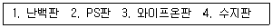

인쇄기능사 (2015-07-19 기출문제)
1과목: 임의구분
1. 인쇄 중 백빼기(백발)의 적은 문자가 이 문자와는 관계없이 민짜부분에 같은 형태로 생기는 트러블 현상은?(문제 오류로 정답이 정확하지 않습니다. 정답지를 찾지못하여 임의 정답 1번으로 설정하였습니다. 정답을 아시는 분께서는 오류 신고를 통하여 정답 입력 부탁 드립니다.)
- 고스트현상
- 인쇄얼룩
- 뒷묻음
- 모틀링
(정답률: 알수없음)

2. 인쇄 잉크의 색조를 조정하기 위한 농도가 높은 착색 재료는?(문제 오류로 정답이 정확하지 않습니다. 정답지를 찾지못하여 임의 정답 1번으로 설정하였습니다. 정답을 아시는 분께서는 오류 신고를 통하여 정답 입력 부탁 드립니다.)
- 산성 염료
- 염기성 염료
- 수지
- 토너
(정답률: 알수없음)
3. 조명의 밝기나 색의 변화에 따라서 망막 자극의 변화가 비례하지 않는 것을 무엇이라 하는가?(문제 오류로 정답이 정확하지 않습니다. 정답지를 찾지못하여 임의 정답 1번으로 설정하였습니다. 정답을 아시는 분께서는 오류 신고를 통하여 정답 입력 부탁 드립니다.)
- 명암순응
- 항상성
- 색순응
- 물체색
(정답률: 알수없음)
4. 실을 엮은 책등을 압축하거나 나무망치로 두들겨서 균일한 두께로 하는 작업은?(문제 오류로 정답이 정확하지 않습니다. 정답지를 찾지못하여 임의 정답 1번으로 설정하였습니다. 정답을 아시는 분께서는 오류 신고를 통하여 정답 입력 부탁 드립니다.)
- 배킹
- 고르기
- 실철하기
- 등굳힘
(정답률: 알수없음)
5. 속장을 먼저 철사로 꿰매고 등에 풀칠을 하여 눌러 말린 다음, 표지를 씌우고 표지와 속장을 함께 다듬 재단하는 제책 방식은?(문제 오류로 정답이 정확하지 않습니다. 정답지를 찾지못하여 임의 정답 1번으로 설정하였습니다. 정답을 아시는 분께서는 오류 신고를 통하여 정답 입력 부탁 드립니다.)
- 양장 제책
- 반양장 제책
- 간이 제책
- 호부장 제책
(정답률: 알수없음)
6. 다음 예시 중 디아조(diazo) 감광제를 주체로 한 인쇄판은?(문제 오류로 정답이 정확하지 않습니다. 정답지를 찾지못하여 임의 정답 1번으로 설정하였습니다. 정답을 아시는 분께서는 오류 신고를 통하여 정답 입력 부탁 드립니다.)

- 1,2
- 1,3
- 2,3
- 2,4
(정답률: 알수없음)
7. 광원의 색온도가 높을수록 다음 중 어떤 색이 가장 강하게 나타나는가?(문제 오류로 정답이 정확하지 않습니다. 정답지를 찾지못하여 임의 정답 1번으로 설정하였습니다. 정답을 아시는 분께서는 오류 신고를 통하여 정답 입력 부탁 드립니다.)
- 빨강(red)
- 녹색(green)
- 노랑(yellow)
- 파랑(blue)
(정답률: 알수없음)
8. 밝은색(흰색) 위의 회색은 어둡게 보이고 어두운색(검은색) 위의 회색은 밝게 보이는 대비 현상은?(문제 오류로 정답이 정확하지 않습니다. 정답지를 찾지못하여 임의 정답 1번으로 설정하였습니다. 정답을 아시는 분께서는 오류 신고를 통하여 정답 입력 부탁 드립니다.)
- 보색대비
- 색상대비
- 채도대비
- 명도대비
(정답률: 알수없음)
9. pH값이 9~10일 경우, 리트머스 시험지는 어떤 색을 나타내는가?(문제 오류로 정답이 정확하지 않습니다. 정답지를 찾지못하여 임의 정답 1번으로 설정하였습니다. 정답을 아시는 분께서는 오류 신고를 통하여 정답 입력 부탁 드립니다.)
- 노랑
- 파랑
- 빨강
- 오렌지색
(정답률: 알수없음)
10. 인쇄물의 표면 가공에서 비닐필름 입히기에 주로 사용되는 필름은?(문제 오류로 정답이 정확하지 않습니다. 정답지를 찾지못하여 임의 정답 1번으로 설정하였습니다. 정답을 아시는 분께서는 오류 신고를 통하여 정답 입력 부탁 드립니다.)
- 초산비닐필름
- 염화비닐필름
- 황산비닐필름
- 브롬화비닐필름
(정답률: 알수없음)
11. 잉크가 인쇄판의 화선부를 통과하여 인쇄가 되는 방식은?(문제 오류로 정답이 정확하지 않습니다. 정답지를 찾지못하여 임의 정답 1번으로 설정하였습니다. 정답을 아시는 분께서는 오류 신고를 통하여 정답 입력 부탁 드립니다.)
- 평판 인쇄
- 공판 인쇄
- 오목판 인쇄
- 볼록판 인쇄
(정답률: 알수없음)
12. 토란잎이나 연잎 또는 물새들의 깃털에서 볼 수 있는 젖음 현상은?(문제 오류로 정답이 정확하지 않습니다. 정답지를 찾지못하여 임의 정답 1번으로 설정하였습니다. 정답을 아시는 분께서는 오류 신고를 통하여 정답 입력 부탁 드립니다.)
- 선택젖음
- 접착젖음
- 침투젖음
- 복합젖음
(정답률: 알수없음)
13. 양장 제책 공정으로 옳은 것은?(문제 오류로 정답이 정확하지 않습니다. 정답지를 찾지못하여 임의 정답 1번으로 설정하였습니다. 정답을 아시는 분께서는 오류 신고를 통하여 정답 입력 부탁 드립니다.)
- 인쇄지검사 → 나눔재단 → 접지 → 쪽맞추기 → 실매기 → 표지붙이기
- 인쇄지검사 → 나눔재단 → 쪽맞추기 → 접지 → 표지붙이기 → 실매기
- 표지붙이기 → 나눔재단 → 인쇄지검사 → 쪽맞추기 → 접지 → 실매기
- 나눔재단 → 쪽맞추기 → 인쇄지검사 → 실매기 → 표지붙이기 → 접지
(정답률: 알수없음)
14. 인쇄 잉크의 성질에 관한 설명 중 틀린 것은?(문제 오류로 정답이 정확하지 않습니다. 정답지를 찾지못하여 임의 정답 1번으로 설정하였습니다. 정답을 아시는 분께서는 오류 신고를 통하여 정답 입력 부탁 드립니다.)
- 색상오차가 적을수록 이상적인 잉크에 가깝다.
- 그레이니스가 적을수록 채도가 높다.
- 3색 잉크 중 비교적 이상적인 잉크에 가까운 색은 마젠타(Magenta)색이다.
- GATF에서는 잉크의 농도값으로 회색도를 평가한다.
(정답률: 알수없음)
15. 인쇄의 4요소 중 잉크와 직접적인 관련이 없는 것은?(문제 오류로 정답이 정확하지 않습니다. 정답지를 찾지못하여 임의 정답 1번으로 설정하였습니다. 정답을 아시는 분께서는 오류 신고를 통하여 정답 입력 부탁 드립니다.)
- 원고
- 판
- 피인쇄체
- 인쇄기
(정답률: 알수없음)
16. 다음 중 친수성이 가장 좋은 판 재료용 금속은?(문제 오류로 정답이 정확하지 않습니다. 정답지를 찾지못하여 임의 정답 1번으로 설정하였습니다. 정답을 아시는 분께서는 오류 신고를 통하여 정답 입력 부탁 드립니다.)
- 아연
- 구리
- 알루미늄
- 철
(정답률: 알수없음)
17. 인쇄잉크의 성질과 관계가 가장 먼 것은?(문제 오류로 정답이 정확하지 않습니다. 정답지를 찾지못하여 임의 정답 1번으로 설정하였습니다. 정답을 아시는 분께서는 오류 신고를 통하여 정답 입력 부탁 드립니다.)
- 뉴톤성
- 점탄성
- 점성
- 소성
(정답률: 알수없음)
18. CTP에 사용되는 레이저와 파장이 잘못 연결된 것은?(문제 오류로 정답이 정확하지 않습니다. 정답지를 찾지못하여 임의 정답 1번으로 설정하였습니다. 정답을 아시는 분께서는 오류 신고를 통하여 정답 입력 부탁 드립니다.)
- 강화 YAG레이저 - 532nm
- 헬륨네온 레이저 - 633nm
- 적색 레이저 다이오드 - 670, 680nm
- 아르곤 레이저 - 830nm
(정답률: 알수없음)
19. 블랭킷이 갖추어야 할 조건이라고 볼 수 없는 것은?(문제 오류로 정답이 정확하지 않습니다. 정답지를 찾지못하여 임의 정답 1번으로 설정하였습니다. 정답을 아시는 분께서는 오류 신고를 통하여 정답 입력 부탁 드립니다.)
- 두께가 균일해야 한다.
- 잉크의 전이성이 좋아야 한다.
- 탄성복원성이 좋아야 한다.
- 잉크 침투성과 내수성이 좋아야 한다.
(정답률: 알수없음)
20. 잉크 조성시 점착성을 저하시키려는 역할을 하는 보조제는?(문제 오류로 정답이 정확하지 않습니다. 정답지를 찾지못하여 임의 정답 1번으로 설정하였습니다. 정답을 아시는 분께서는 오류 신고를 통하여 정답 입력 부탁 드립니다.)
- 콤파운드
- 겔 비이클
- 미디엄
- 건조제
(정답률: 알수없음)
2과목: 임의구분
21. 석유계 용제를 많이 사용하고 있는 인쇄산업 분야에 부적합한 고무 롤러는?(문제 오류로 정답이 정확하지 않습니다. 정답지를 찾지못하여 임의 정답 1번으로 설정하였습니다. 정답을 아시는 분께서는 오류 신고를 통하여 정답 입력 부탁 드립니다.)
- 니트릴 고무
- 클로로플렌 고무
- 스티렌 고무
- 우레탄 고무
(정답률: 알수없음)
22. 다음 중 인쇄용지에 정전기가 발생하면 어떤 사고가 주로 발생하는가?(문제 오류로 정답이 정확하지 않습니다. 정답지를 찾지못하여 임의 정답 1번으로 설정하였습니다. 정답을 아시는 분께서는 오류 신고를 통하여 정답 입력 부탁 드립니다.)
- 용지의 신축
- 급지 불량
- 잉크 농도 저하
- 뒷묻음 방지
(정답률: 알수없음)
23. 해상력이 가장 좋은 스크린 선수는?(문제 오류로 정답이 정확하지 않습니다. 정답지를 찾지못하여 임의 정답 1번으로 설정하였습니다. 정답을 아시는 분께서는 오류 신고를 통하여 정답 입력 부탁 드립니다.)
- 100선
- 200선
- 300선
- 400선
(정답률: 알수없음)
24. 평판용 알루미늄판에 대산 설명으로 틀린 것은?(문제 오류로 정답이 정확하지 않습니다. 정답지를 찾지못하여 임의 정답 1번으로 설정하였습니다. 정답을 아시는 분께서는 오류 신고를 통하여 정답 입력 부탁 드립니다.)
- 알루미늄판은 친수성이 좋다.
- 색상은 은백색, 금속광택을 낸다.
- 비중은 약 7.1 정도이다.
- 연성은 순도가 높은 것이 크다.
(정답률: 알수없음)
25. 용제형 인쇄잉크의 조성에서 비이클의 역할이 아닌 것은?(문제 오류로 정답이 정확하지 않습니다. 정답지를 찾지못하여 임의 정답 1번으로 설정하였습니다. 정답을 아시는 분께서는 오류 신고를 통하여 정답 입력 부탁 드립니다.)
- 안료입자를 판에서 피인쇄체에 운반하는 기능
- 인쇄기 위에서 유동성을 유지하는 기능
- 피인쇄체에 옮겨진 후 건조막을 형성하는 기능
- 잉크점도 및 색상을 조절하는 기능
(정답률: 알수없음)
26. 다음 중 뜯김(picking)의 원인과 가장 거리가 먼 것은?(문제 오류로 정답이 정확하지 않습니다. 정답지를 찾지못하여 임의 정답 1번으로 설정하였습니다. 정답을 아시는 분께서는 오류 신고를 통하여 정답 입력 부탁 드립니다.)
- 비이클(vehicle)의 저점도
- 잉크의 택(tack) 증가
- 종이의 표면강도 부족
- 잉크 접착력의 과다
(정답률: 알수없음)
27. 블리딩(bleeding)현상은 주로 어떤 판식에서 나타나는가?(문제 오류로 정답이 정확하지 않습니다. 정답지를 찾지못하여 임의 정답 1번으로 설정하였습니다. 정답을 아시는 분께서는 오류 신고를 통하여 정답 입력 부탁 드립니다.)
- 볼록판
- 오목판
- 평판
- 공판
(정답률: 알수없음)
28. 스크린인쇄 작업시 잉크가 번지는 경우 구제 방법은?(문제 오류로 정답이 정확하지 않습니다. 정답지를 찾지못하여 임의 정답 1번으로 설정하였습니다. 정답을 아시는 분께서는 오류 신고를 통하여 정답 입력 부탁 드립니다.)
- 인쇄기계를 교체한다.
- 판 띄우기를 높인다.
- 잉크의 점도를 높인다.
- 잉크의 건조 속도를 늦춘다.
(정답률: 알수없음)
29. 셀로판 테이프의 순간박리는 무엇을 시험하는 것인가?(문제 오류로 정답이 정확하지 않습니다. 정답지를 찾지못하여 임의 정답 1번으로 설정하였습니다. 정답을 아시는 분께서는 오류 신고를 통하여 정답 입력 부탁 드립니다.)
- 내막성
- 내마찰성
- 접착성
- 내유성
(정답률: 알수없음)
30. 특수 피인쇄체 중 셀로판에 대한 설명으로 거리가 먼 것은?(문제 오류로 정답이 정확하지 않습니다. 정답지를 찾지못하여 임의 정답 1번으로 설정하였습니다. 정답을 아시는 분께서는 오류 신고를 통하여 정답 입력 부탁 드립니다.)
- 대전성이 크다.
- 뛰어난 방습성이 있다.
- 내유성, 내약품성이 좋다.
- 그라비어인쇄에 많이 사용된다.
(정답률: 알수없음)
31. 스크린인쇄에 있어서 건조 불량이 생기는 원인으로 가장 거리가 먼 것은?(문제 오류로 정답이 정확하지 않습니다. 정답지를 찾지못하여 임의 정답 1번으로 설정하였습니다. 정답을 아시는 분께서는 오류 신고를 통하여 정답 입력 부탁 드립니다.)
- 건조 지연제를 많이 사용했을 때
- 건조 시간이 부족할 때
- 건조제가 부적당할 때
- 인쇄압력이 과다할 때
(정답률: 알수없음)
32. 다음 중 인쇄용 책등의 구조가 아닌 것은?(문제 오류로 정답이 정확하지 않습니다. 정답지를 찾지못하여 임의 정답 1번으로 설정하였습니다. 정답을 아시는 분께서는 오류 신고를 통하여 정답 입력 부탁 드립니다.)
- 타이트 백
- 라이플 백
- 홀로 백
- 플레시블 백
(정답률: 알수없음)
33. 양쪽성 물질의 분자들은 수용액의 내부보다 물과 기름의 계면에 많이 모여 있게 되므로 표면의 농도가 높아지는 흡착현상을 일으키는데 이러한 강력한 흡착을 일으키는 표면활성물질을 무엇이라고 하는가?(문제 오류로 정답이 정확하지 않습니다. 정답지를 찾지못하여 임의 정답 1번으로 설정하였습니다. 정답을 아시는 분께서는 오류 신고를 통하여 정답 입력 부탁 드립니다.)
- 표면 강화제
- 계면 활성제
- 개시제
- 소포제
(정답률: 알수없음)
34. 판의 화선부에 부착된 잉크를 기계적인 압력으로 피인쇄체에 부착시키는 기계는?(문제 오류로 정답이 정확하지 않습니다. 정답지를 찾지못하여 임의 정답 1번으로 설정하였습니다. 정답을 아시는 분께서는 오류 신고를 통하여 정답 입력 부탁 드립니다.)
- 복사기
- 인쇄기
- 코팅기
- 프린터기
(정답률: 알수없음)
35. 오프셋 인쇄기의 급지장치에 속하지 않는 것은?(문제 오류로 정답이 정확하지 않습니다. 정답지를 찾지못하여 임의 정답 1번으로 설정하였습니다. 정답을 아시는 분께서는 오류 신고를 통하여 정답 입력 부탁 드립니다.)
- 가늠맞춤 장치
- 급지판
- 델리버리 테이프
- 급지판 승강장치
(정답률: 알수없음)
36. 블랭킷의 세척액으로 가장 적당한 것은?(문제 오류로 정답이 정확하지 않습니다. 정답지를 찾지못하여 임의 정답 1번으로 설정하였습니다. 정답을 아시는 분께서는 오류 신고를 통하여 정답 입력 부탁 드립니다.)
- 클리너
- 사염화탄소
- 아세톤
- 이황화탄소
(정답률: 알수없음)
37. 다음 중 잉크의 전이 현상에 영향을 주는 요인과 가장 거리가 먼 것은?(문제 오류로 정답이 정확하지 않습니다. 정답지를 찾지못하여 임의 정답 1번으로 설정하였습니다. 정답을 아시는 분께서는 오류 신고를 통하여 정답 입력 부탁 드립니다.)
- 인쇄속도
- 인쇄압력
- 잉크의 성질
- 잉크의 색상
(정답률: 알수없음)
38. 오프셋 윤전 인쇄기의 통배열에 따른 형식 중 고무통이 압통을 겸하기 대문에 고무통 2개사이로 종이가 통과하여 양면 인쇄되는 형식은?(문제 오류로 정답이 정확하지 않습니다. 정답지를 찾지못하여 임의 정답 1번으로 설정하였습니다. 정답을 아시는 분께서는 오류 신고를 통하여 정답 입력 부탁 드립니다.)
- 넘김 1통형
- 넘김 3통형
- 체인 운반형
- B-B형
(정답률: 알수없음)
39. 인쇄에 관련되는 pH 에 대한 설명으로 옳은 것은?(문제 오류로 정답이 정확하지 않습니다. 정답지를 찾지못하여 임의 정답 1번으로 설정하였습니다. 정답을 아시는 분께서는 오류 신고를 통하여 정답 입력 부탁 드립니다.)
- 인쇄용지가 상질지에 가까울수록 산성에 가깝다.
- 인쇄용지가 산성에 가까울수록 건조시간이 짧다.
- 축임물의 산성도가 높아질수록 건조시간이 길다.
- 축임물의 pH가 낮아지면 불감지화 효과가 상실되어 더러움이 발생한다.
(정답률: 알수없음)
40. 폴리에스테르 필름의 특성으로 가장 거리가 먼 것은?(문제 오류로 정답이 정확하지 않습니다. 정답지를 찾지못하여 임의 정답 1번으로 설정하였습니다. 정답을 아시는 분께서는 오류 신고를 통하여 정답 입력 부탁 드립니다.)
- 정전기가 발생하지 않는다.
- 플라스틱 증에서 아주 강인한 필름이다.
- 내연성이나 내약품성이 좋다.
- 온.습도에 따른 치수안정성이 좋다.
(정답률: 알수없음)
3과목: 임의구분
41. 2개의 롤러 상에서 잉크의 얇은 막이 두 부분으로 분열될 때 잉크가 가지는 내부 저항성을 무엇이라 하는가?(문제 오류로 정답이 정확하지 않습니다. 정답지를 찾지못하여 임의 정답 1번으로 설정하였습니다. 정답을 아시는 분께서는 오류 신고를 통하여 정답 입력 부탁 드립니다.)
- 택(tack)
- 예사성
- 틱소트로피
- 항복값
(정답률: 알수없음)
42. 인쇄사고를 사전에 예방하기 위한 검토사항과 가장 거리가 먼 것은?(문제 오류로 정답이 정확하지 않습니다. 정답지를 찾지못하여 임의 정답 1번으로 설정하였습니다. 정답을 아시는 분께서는 오류 신고를 통하여 정답 입력 부탁 드립니다.)
- 인쇄 작업 적성
- 소요인쇄 원가계산
- 사용목적과 용도
- 피인쇄물의 재질 파악
(정답률: 알수없음)
43. 이중 편심 베어링을 가진 통은?(문제 오류로 정답이 정확하지 않습니다. 정답지를 찾지못하여 임의 정답 1번으로 설정하였습니다. 정답을 아시는 분께서는 오류 신고를 통하여 정답 입력 부탁 드립니다.)
- 판통
- 배지통
- 고무통
- 압통
(정답률: 알수없음)
44. 오프셋 인쇄기의 판통 베어러의 기준 지름은?(문제 오류로 정답이 정확하지 않습니다. 정답지를 찾지못하여 임의 정답 1번으로 설정하였습니다. 정답을 아시는 분께서는 오류 신고를 통하여 정답 입력 부탁 드립니다.)
- 판통기어의 피치원의 지름과 같다.
- 판통기어의 피치원의 지름보다 작다.
- 판통기어의 피치원의 지름보다 크다.
- 판통표면의 지름과 같다.
(정답률: 알수없음)
45. 다음 중 페하(pH)에 관한 설명으로 올바른 것은?(문제 오류로 정답이 정확하지 않습니다. 정답지를 찾지못하여 임의 정답 1번으로 설정하였습니다. 정답을 아시는 분께서는 오류 신고를 통하여 정답 입력 부탁 드립니다.)
- 수용액의 점도와 소성의 저오를 나타내는 것
- 수용액의 강산성과 중성의 정도를 나타내는 것
- 수용액의 점도와 전이현상의 정도를 나타내는 것
- 수용액의 산성과 알칼리성의 정도를 나타내는 것
(정답률: 알수없음)
46. 스크린 인쇄시 스퀴지의 가압상태로 가장 알맞은 것은?(문제 오류로 정답이 정확하지 않습니다. 정답지를 찾지못하여 임의 정답 1번으로 설정하였습니다. 정답을 아시는 분께서는 오류 신고를 통하여 정답 입력 부탁 드립니다.)
- 스퀴지의 날이 휘도록 가압한다.
- 스퀴지 날이 살짝 닫는 정도로 가압한다.
- 잉크가 피인쇄체에 전이 되지 않도록 가압한다.
- 잉크가 피인쇄체에 충분히 전이 되도록 가압한다.
(정답률: 알수없음)
47. 제책의 종류 중 사전류나 장서류에 많이 사용되는 제책 방식으로 실로 맨 속장을 다듬 재단한 다음 표지를 싸서 만드는 방식을 무엇이라고 하는가?(문제 오류로 정답이 정확하지 않습니다. 정답지를 찾지못하여 임의 정답 1번으로 설정하였습니다. 정답을 아시는 분께서는 오류 신고를 통하여 정답 입력 부탁 드립니다.)
- 호부장 제책
- 반양장 제책
- 중철 제책
- 양장 제책
(정답률: 알수없음)
48. 오프셋 인쇄작업에 있어서 종이 뜯김(picking)의 대책으로 가장 옳은 것은?(문제 오류로 정답이 정확하지 않습니다. 정답지를 찾지못하여 임의 정답 1번으로 설정하였습니다. 정답을 아시는 분께서는 오류 신고를 통하여 정답 입력 부탁 드립니다.)
- 잉크의 택(tack)을 감소시킨다.
- 판통의 잉크 및 축임물량을 감소시킨다.
- 압통과 블랭킷통 사이의 인압을 증가시킨다.
- 인쇄속도를 증가시킨다.
(정답률: 알수없음)
49. 윤전인쇄기의 구조 중 인쇄 작업시 인쇄를 중단하는 일이 없이 두루마리 종이를 자동적으로 연결하는 장치는?(문제 오류로 정답이 정확하지 않습니다. 정답지를 찾지못하여 임의 정답 1번으로 설정하였습니다. 정답을 아시는 분께서는 오류 신고를 통하여 정답 입력 부탁 드립니다.)
- 두루마리 종이 브레이커 장치
- 오토 페이스터
- 플로팅 롤러
- 텐션 롤러
(정답률: 알수없음)
50. 스크린인쇄시 인쇄판이 막힐 때의 대책으로서 틀린 것은?(문제 오류로 정답이 정확하지 않습니다. 정답지를 찾지못하여 임의 정답 1번으로 설정하였습니다. 정답을 아시는 분께서는 오류 신고를 통하여 정답 입력 부탁 드립니다.)
- 건조지연제를 사용한다.
- 잉크의 점도를 높여준다.
- 잉크를 바꾼다.
- 지정된 용제를 사용한다.
(정답률: 알수없음)
51. 고려시대 고금상정예문의 인쇄방식은?(문제 오류로 정답이 정확하지 않습니다. 정답지를 찾지못하여 임의 정답 1번으로 설정하였습니다. 정답을 아시는 분께서는 오류 신고를 통하여 정답 입력 부탁 드립니다.)
- 오프셋
- 스크린
- 볼록판
- 그라비어
(정답률: 알수없음)
52. 다음 중 인쇄물의 표면가공 목적이 아닌 것은?(문제 오류로 정답이 정확하지 않습니다. 정답지를 찾지못하여 임의 정답 1번으로 설정하였습니다. 정답을 아시는 분께서는 오류 신고를 통하여 정답 입력 부탁 드립니다.)
- 잉크의 퇴색 방지
- 인쇄효과나 장식효과를 높인다.
- 생산단가를 낮춘다.
- 약품에 견디는 힘을 크게 한다.
(정답률: 알수없음)
53. 인쇄회사의 작업과정에서 발생되는 유해가스가 인체에 흡수되지 않도록 하기 위하여 필요한 보호구는?(문제 오류로 정답이 정확하지 않습니다. 정답지를 찾지못하여 임의 정답 1번으로 설정하였습니다. 정답을 아시는 분께서는 오류 신고를 통하여 정답 입력 부탁 드립니다.)
- 방진 마스크
- 방독마스크
- 방화 마스크
- 방염 마스크
(정답률: 알수없음)
54. 책을 만드는 목적이 아닌 것은?(문제 오류로 정답이 정확하지 않습니다. 정답지를 찾지못하여 임의 정답 1번으로 설정하였습니다. 정답을 아시는 분께서는 오류 신고를 통하여 정답 입력 부탁 드립니다.)
- 읽기에 편하고 취급하기에 간편하도록 하기 위해서
- 낱장으로 된 서류 등에 흩어지지 않게 하기 위해서
- 책을 만들어 장기간 보존 할 수 있도록 하기 위해서
- 옛날 고서 등의 제본방식과 인쇄술 고수하기 위해서
(정답률: 알수없음)
55. 다음 중 기체, 액체, 고체 등의 계면에서 분자들의 인력 때문에 나타나는 힘을 무엇이라 하는가?(문제 오류로 정답이 정확하지 않습니다. 정답지를 찾지못하여 임의 정답 1번으로 설정하였습니다. 정답을 아시는 분께서는 오류 신고를 통하여 정답 입력 부탁 드립니다.)
- 표면장력
- 계면장력
- 표면자유에너지
- 계면자유에너지
(정답률: 알수없음)
56. 다음 중 종이의 강도가 강해 시멘트나 밀가루 등의 포대에 이용되는 용지는?(문제 오류로 정답이 정확하지 않습니다. 정답지를 찾지못하여 임의 정답 1번으로 설정하였습니다. 정답을 아시는 분께서는 오류 신고를 통하여 정답 입력 부탁 드립니다.)
- 백상지
- 아트지
- 크라프트지
- 엠보싱지
(정답률: 알수없음)
57. 인쇄판을 장착하거나 블랭킷을 세척하기 위하여 인쇄기의 판통을 일정한 위치에서 정확하게 정지시키기 위해서는 어떤 스위치를 사용해야 하는가?(문제 오류로 정답이 정확하지 않습니다. 정답지를 찾지못하여 임의 정답 1번으로 설정하였습니다. 정답을 아시는 분께서는 오류 신고를 통하여 정답 입력 부탁 드립니다.)
- 정지 스위치
- 미동 스위치
- 저속 스위치
- 고속 스위치
(정답률: 알수없음)
58. 오프셋 매엽 인쇄기계의 종류가 아닌 것은?(문제 오류로 정답이 정확하지 않습니다. 정답지를 찾지못하여 임의 정답 1번으로 설정하였습니다. 정답을 아시는 분께서는 오류 신고를 통하여 정답 입력 부탁 드립니다.)
- 단색기
- 다색기
- 양면 인쇄기
- 그라비어 인쇄기
(정답률: 알수없음)
59. 안전모나 안전벨트를 착용하는 이유는?(문제 오류로 정답이 정확하지 않습니다. 정답지를 찾지못하여 임의 정답 1번으로 설정하였습니다. 정답을 아시는 분께서는 오류 신고를 통하여 정답 입력 부탁 드립니다.)
- 작업자용품의 일종이다.
- 작업능률 가속용이다.
- 전도 방지용이다.
- 추락재해 방지용이다.
(정답률: 알수없음)
60. 다음 중 인쇄물의 표면가공의 종류가 아닌 것은?(문제 오류로 정답이 정확하지 않습니다. 정답지를 찾지못하여 임의 정답 1번으로 설정하였습니다. 정답을 아시는 분께서는 오류 신고를 통하여 정답 입력 부탁 드립니다.)
- 광택니스 칠 및 인쇄
- 비닐 필름 입히기
- 오프셋 인쇄
- 금박 은박 붙임
(정답률: 알수없음)